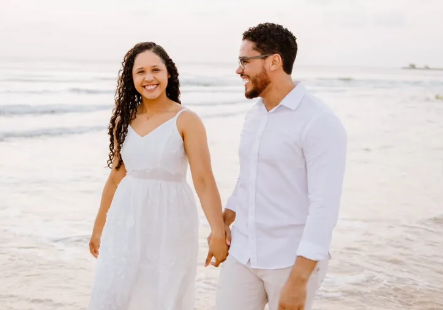

Opção 1Cormorant Garamond 300
Mayara&Lucas
Depois do sim, a noite é nossa
Já carregada no site (0 KB a mais). Leve, clássica, a mais delicada das quatro.
Opção 2Bodoni Moda 400
Mayara&Lucas
Depois do sim, a noite é nossa
+14 KB. Didone de alto contraste, ar editorial de revista.
Opção 3Gilda Display 400
Mayara&Lucas
Depois do sim, a noite é nossa
+20 KB. Serifas finas e largas, elegante e romântica.
Opção 4Italiana 400
Mayara&Lucas
Depois do sim, a noite é nossa
+10 KB. Traço fino e estreito, a mais leve e vertical.